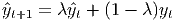
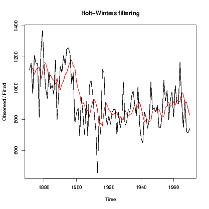

{kind=link}
{kind=link}
{kind=link}
{kind=link}
{kind=link}
{kind=link}
{kind=link}
{kind=link}
{kind=link}
{kind=link}
{kind=link}
{kind=link}

This chapter assumes an understanding of the material in Chapter 7 on creating simple graphs. That material included adding simple elements of good graphing practice, like meaningful titles and axis labels. In this chapter we see colour, multiple graphs in one window, multiple sets of points on a single set of axes, adding extra points or lines, and introduces colour, different symbols and the legends that will then become necessary additions.
We have already seen how to combine a set of graphs to be collected into one window so that they form a single object for inserting into documents. The par() command controls a large number of graphical parameters, including the layout of the graph window. One of its common uses is to split up the graph window quickly.
Exhibit 12.2 shows the residual analysis plots for a regression model. Four separate graphs form that residual analysis by default. If we do not combine them into a single window using the par() command we need to manipulate the four graphs separately when it comes time to include them in a report.
The mfrow argument in the par() command tells R how to divide up the graph window. Note that it divides the existing window so that the aspect ratio of the separate panels may change from what you expect unless you either change the overall shape of the graph window (see Exhibit 7.3 where we did this for a boxplot) or you divide the window up equally in both vertical and horizontal directions (see Exhibit 12.2). In all examples presented thus far, the window has been divided up into four equal sections. R then inserts successively created graphs into those sections until the window has four graphs in it. A fifth graph would appear on a new window that had four sections in it; this would fit graphs five to eight, with the ninth going onto a new sheet and so on. You can split the window into what ever size grid you like. Keeping the aspect ratio of the graphs is a good idea, but making them slightly wider than they are high is better than the reverse. That is, five rows of four graphs is better than four rows of five graphs, unless you are prepared to change the overall height and width of the window.
To illustrate creation of a lot of graphs and the efficiency of managing them as a single graph window, we will create the histograms of twelve distinct random samples of size 100, taken from the standard normal distribution.
The final graph appears in Exhibit ??, but there are a couple of functions that need explaining. First, the par() command with the mfrow argument opens a graphing window and splits it into twelve sections. The second line uses the for() command to create a loop which is just a set of commands that are grouped together and run over and over until the end of the loop. In this case, the loop is run a total of twelve times with an arbitrary lable given to the counter used. A loop’s counter is often not used in the processing of the code so is given a meaningless name; in this instance, the word Counter is used to point out where the counter appears in the code. The third line creates a histogram with the hist() command, of a set of 100 random values taken from the standard normal distribution, found using the rnorm() command. Note the code also adds a title to each of the distinct graphs. This is done using the paste() command which joins some text with the counter number to form the title that will, as a consequence, change for each graph. If there had been two or more commands inside the loop, they would need to be grouped together using curly braces. Ignoring the braces would mean only the first line of the set would be issued. The braces are included here as an example of good practice.
The layout() command is very powerful, but can be a nightmare to sort out. Before demonstrating how to implemet the command, I need to show you what is possible by explaining how to think about the way the command works.
Regardless of the size and shape of the particular graphs and how you want them arranged, you need to think of the graphing winow as a rectangle that can be split into any number of rows and columns. The shape of the sections of the window are dependent on the number of rows and columns of course so for the time being let’s work with a 4×4 grid. This means the 16 sections are the same shape as the overall window.
We tell the layout() command how to use up the sections by giving each section a label. The sections that get used for the first graph will be given a “1", sections for the second graph get a “2" and so on. For illustration, let’s use up nine of the 16 sections for a large graph (a scatter plot), and place three smaller ones down the side of it; below those, we will add a pair of boxplots which each need two sections of the window.
The layout() command needs to interpret these labels as a matrix. It would probably help to write out what you want for the arrangement, create the matrix of labels, check that the two agree, and then worry about the code for the various graphs. So for my description, I want a 4×4 matrix, with a total of six different numbers in it. Nine of them will be ones, a two, a three, a four, two fives, and two sixes. They will be laid out as follows:
Getting this matrix in R means identifying its contents, naming exactly how many rows or columns are needed and how to insert the values into the defined structure. We use the matrix() command to create the object for our arrangement, and the c() command to combine the labels into a single object. Arguments to the matrix() command we need are either the nrow or ncol (one will do) and the byrow switch that tells the matrix() command to fill up the matrix by row until it is full.
Having established the success of the code for the arrangement structure, we just open the graph window using the layout() command, and add plots in the order our labels specify. The full set of instructions is given in Exhibit 13.2. Note that the graphs are chosen for the illustration of the layout() command, not for the purposes of showing anything of interest in any of the graphs created. The quakes data set distributed with the base installation of R is used in this illustration.
Note that the way the points have been plotted and the way the text appears in these graphs, differs. The addition of the cex argument in the third and fourth plot() commands forces the size of the plotted symbol to be reduced. This is known as character expansion, and can be applied to the text that appears on the graphs as well. Individual elements of text are adjusted using the cex.main, cex.sub, cex.lab, and cex.axis arguments. See the help for the par() command for further details on their use.
We show how to create a graph with different colours and symbols without passing judgement on the suitability of the colours or symbols used. The important feature to remember when you are about to create such a graph is that the reader will not necessarily see the difference in colour as you do. Similarly, the selection of symbol should be thought out carefully. We do not want a solid symbol to appear bigger than a hollow one or vice versa.
The iris data supplied with R for this example. It has five variables in all; four are for numeric measurements and the fifth is the species. In Exhibit 13.3 we use three colours for the species and in Exhibit 13.4 we use different symbols. There is no reason why you might not use both arguments in combination to use different colours for the different symbols.
Note that we needed to convert the species names to numbers using the as.numeric() command to get the symbols to be plotted.
R seesm to have converted the species names to numbers when we called for different colours, starting with 1 for black, 2 for red, and 3 for green. As an aside, the colour can be specified by name or by a number. There are well over 600 named colours to choose from so the full list is therefore not printed here. Type
if you are really keen to know what they all are. If this list is still not sufficient to meet your needs, you can design your own colour using a combination of red, green, and blue components. This is explained under the help for the par() command.
The default action for any scatter plot is to mark each point. If the set of x-values are ordered we can create a line plot. This is often seen as a time series plot. We create a time series plot very easily using the plot() command on an object that has been stored as a time series. There are many examples of time series i the datasets package. We use the ldeaths series which counts the number of deaths due to lung diseases in the United Kingdom, and its associated series for male and female deaths.
In Exhibit 13.5, we see a set of three commands. The first plots a time series on a set of axes and the axis labels. The second and third each add a set of line segments from the other two series using the lines() command.
We will see that the plot can be improved by adding a legend in Exhibit 13.7.
In Section 12.3 we saw how to add a fitted line from a simple regression model to a plot of the data used to fit the model, using the abline() command. This command has other uses that are explained here. This section is only interested in the addition of a single straight line at a time; a series of line segments joined together was covered in Section 13.5.
Perhaps the easiest tasks of adding lines to a plot is to add either a horizontal or a vertical line. In Exhibit 13.6, we see the locations of the quakes marked by their latitude and longitude. On this occasion, the graph window has been left square and the spacing on the graph itself would be different for the latitude and longitude if we did not force the axes to have similar length for each direction. The xlim and ylim arguments create the axes, but note the need to correctly define the axis for latitude from a large negative number to the less negative number so that the orientation of north and south is kept consistent with convention. Fiji is in the southern hemisphere after all!
The plot() command creates the axes and plots the points for the earthquakes in Exhibit 13.6. We then add two vertical and two horizontal lines to the plot, both using the abline() command.
Notice that the four commands used to add the four extra lines state the horizontal or vertical placement with a single letter, and that the line type has been chosen in three instances. It turns out that line type 1 (a solid line) is the default. More types do exist but those given are the most commonly chosen. The thickness of the lines can be altered also, using the lwd argument. The default line width is 1.
It is also possible to add a straight line that is niether vertical or horizontal using the abline() command. To achieve this we need to know the slope and intercept of the line. This is the form of this command used when we added the fitted line for a simple linear regression model to the plot in Section 12.3. The plotted line will have the equation y = a + bx and we need only supply the values of a and b to the abline() command. Exhibit ?? shows an example using the
Use of abline() is great if you have a straight line to add to a plot, but as soon as the line needs to be curved the problems begin. We will see that it isn’t actually too difficult if we use the curve() command. First, we add a curve representing the normal probability density function to a histogram of random values.
 link to SVG file: ComplexGraphsHistWithNormalCurve-1.svg
The curve() function has four arguments in this example. First is the function being plotted, which in this case is dnorm() —the density function for the normal distribution. We then supply the range of values over which this function is to be evaluated using two arguments, and finally we ask that the curve be aded to the existing plot. There are other arguments that we could add, including n, the number of points to be evaluated over the specified range.
The second example shown here is the addition of the quadratic fitted line for a regression model. We use the example given in Section 12.5.

link to SVG file: ComplexGraphsAddPolyCurve-1.svg
A bar chart, as seen in Section 7.7.1, has a bar showing the frequency of each level of a single factor. A cluster bar chart has a bar for each combination of two factors. The clustering indicates how the bars are grouped together. A stack bar chart on the other hand has a single bar for each level of one factor split into sections for each level of the second factor; it therefore appears to stack the bars on top of one another.
To create an example, we will first create a list of frequencies of outcomes and the two categorical variables required. The cluster bar chart and stack bar chart then appear in Exhibits 13.8 and 13.9 respectively. Our data consist of the counts of males and females of ages 17 to 20.
To create the two types of bar chart, we need to create a matrix for the counts to be used in the graphs. In this instance, this is done using the tapply() command The actual plotting is done using the barplot() command which recognizes it is working on this matrix and acts accordingly, including the ability to generate a legend for the graphs.
A scatter plot indicates the presence of an observation at pairs of x and y values. When a third variable is also measured, we run into some trouble when comparing it to the values of x and y in a single graph. Three-dimensional displays can be employed but require the interpretation of the creator and the reader to turn the two-dimensional graph on paper or the screen into the three-dimensional object actually being displayed.
A contour plot is a two-dimensional display. It shows a set of curves that represent common values of a variable plotted against two other variables. They are commonly seen in weather charts where barometric pressure lines (contours) are plotted on the map of a country or region (latitude and longitude are the two other variables).
Exhibit 13.10 shows the contour lines for the altitude of a volcano in Auckland, New Zealand. Mt Eden is also known by its Maori name Maunga Whau and the data we need for this illustration is provided in the datasets supplied with base installations of R.
This provides a black and white image that has the contours marked with the value of the third variable. A coloured version of the plot is available using the filled.contour() command in place of the contour() command in Exhibit 13.10. An even more impressive version of this plot can be obtained by looking at the example that accompanies the help for the volcano data. Typing:
generates the plot using the code given in the help file.
The volcano data is stored as a matrix of altitudes. The contour() command uses this to interpolate the coordinates of the points where the altitude is constant.
A further example is generating the contours for a function. Let’s plot the function
Note the contour() function needed to know the unique values of the x and y variables we created, but that the z matrix needed these values repeated enough times so that the function was evaluated over the entire set of combinations of x and y.
{kind=link}